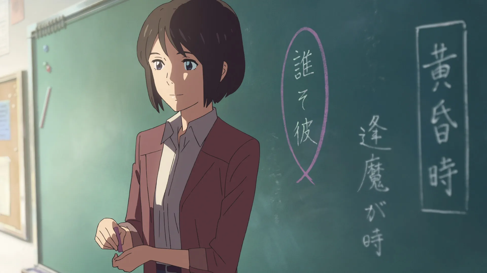

These References/Easter Eggs are found throughout the whole Anime
References to Garden Of Words (Makoto Shinkai's previous Movie)
The Main Protagonist of Garden Of Words has made a cameo inside the movie as a Teacher
Left is the character from Garden Of Words, while right is the teacher from Kimi No Na Wa. Splitting Image dont you think?

The name of the restaurant that Taki was working at when translated is actually The Garden Of Words, a direct reference towards Makoto Shinkai's Previous Movie
The name was: Il Giardino Delle Parole when translated becomes the Garden of Words.
The background image is from the Anime itself, it looks so realistic!
A smaller easter egg, the Cafe that Taki and his friends visited is also called Leaves Of Words, which shows a small relation to the Garden Of Words.
References to Z-Kai which was in Cross Roads another one of Makoto Shinkai's previous movies.
It may be hard to see but here are the scenes in which Z-Kai can be screen
Reference to Hyouka
The map used to depict real life locations in Hyouka was used in Kimi No Na Wa.
This one might be a stretch but there is still a noticeable similarity between the maps.
References to Jojo's Bizarre Adventure
In the ending scene of Kimi No Na Wa, there is a similar line used in Jojo's Bizarre Adventure. It probably has also been used by many other animes, but this is the one i found the earliest so i will be using it!
References to the Author
There was a scene in Taki's room, where a mug with the author, Makoto Shinkai's avatar can be seen on it.